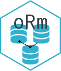

Changelog
Source:NEWS.md
oRm 0.3.0
New Features
- Added comprehensive PostgreSQL dialect support with RETURNING clause
- Enhanced schema management with automatic schema creation
- Improved transaction handling with
with.Engine()method - Added support for connection pooling via pool package
Improvements
- Enhanced dialect system for better database compatibility
- Improved error handling and validation
- Better documentation and vignettes
- Added comprehensive test coverage for PostgreSQL dialect
Bug Fixes
- Fixed S3 method signature consistency for
with()methods - Improved handling of NULL values in database operations
- Fixed documentation issues and parameter mismatches
Breaking Changes
- Updated
with.Engine()andwith.Record()method signatures for S3 consistency
This is the initial CRAN submission for oRm.